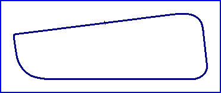

| Length | 0.608 Miles // 0.978 km |
| Direction | Anticlockwise |
Contact Information |
|
| Address |
|
| Telephone | |
| Website | http://www.oldtimer-duisburg.de |
Duisburg
'Oldtimer' Circuit

| Length | 0.608 Miles // 0.978 km |
| Direction | Anticlockwise |
Contact Information |
|
| Address |
|
| Telephone | |
| Website | http://www.oldtimer-duisburg.de |
racingcircuits.net - Lasted Updated: 04 June 2004 13:18:09 GMT Daylight Time
Data
Sources
email - from Martin Berrang on Fri 28/05/04 23:51
email - from Martin Berrang on Tue 23/03/04 10:25
Website - "Oldtimer-Grand-Prix in Duisburg"; http://www.oldtimer-duisburg.de